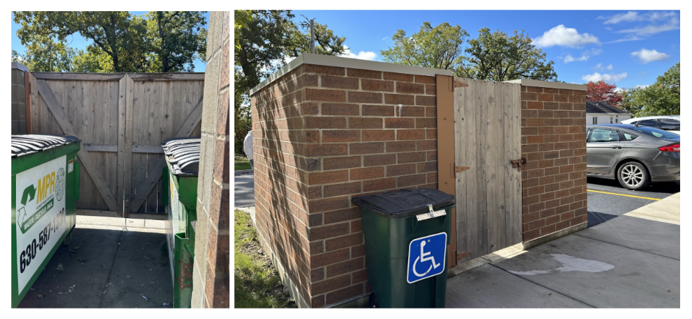

Prop-N-Lock

OBJECTIVE:
Allow wheelchair users who reside at the Sertoma Centre to independently dispose of their household waste in a large communal dumpster. Currently, this task is difficiult due to the need to simultaneoulsy physically elevate themselves on the wheelchair, open the large lid, and also lift the trash container. An image of the Sertoma Centre dumpster area is shown below:
